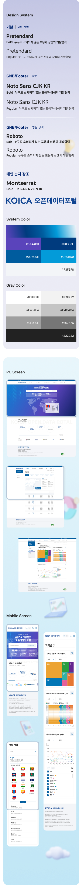
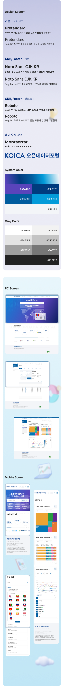

project preview
KOICA 오픈데이터 포털
웹사이트 고도화
2022.06
Scroll

overview
KOICA
KOICA
오픈데이터 포털
KOICA의 주요 협력국별 데이터 및 사업정보와 개발협력 주요 지표에 대한 정보를 시각화하여 제공하는 웹사이트입니다. 데이터 구분이 어려운 그래프 및 차트에 기준이 되는 컬러를 새롭게 선정하여 한눈에 식별이 가능한 차트로 구성하였으며, 기존에 문제가 되었던 레이아웃 및 시각화 요소의 밸런스를 조정하여 가독성과 가시성을 향상시켰습니다.
- Client KOICA
- Partner 케이투웹테크
 
